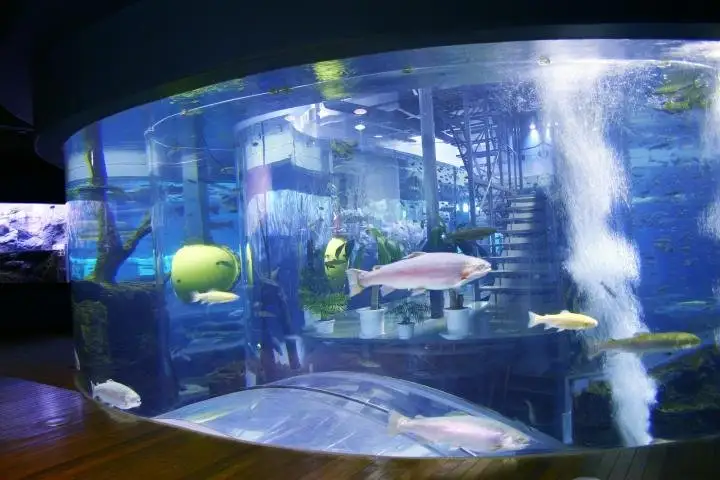
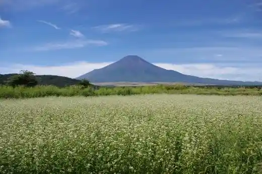
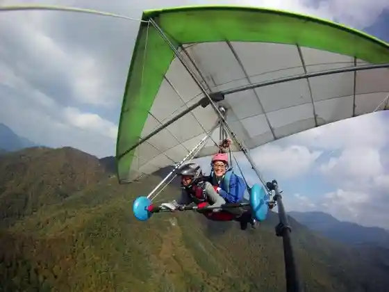
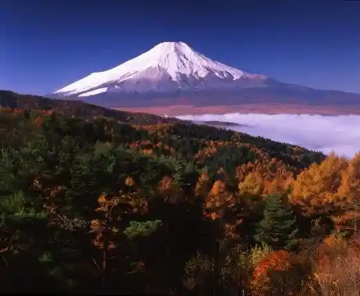
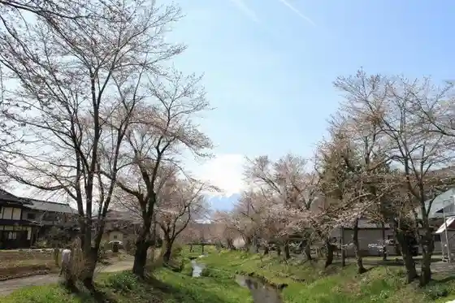

Oshino, Yamanashi
Oshino · Yamanashi
Oshino
Highlighted on the Yamanashi map.

Sights
Fuji Yusui no Sato Aquarium (Fujiyusui no Satosuizokukan)
Genchi Ku Den'en Chitai (Harachikuden'enchitai)

Oshino Sukaisupotsu Kurabu (Oshi no Sukaisupotsukurabu)

Niju Kyoku Toge (Nijumagaritoge)

Niina Shogawa Soi no Sakura | Oshino (Shinnashogawazoi no Sakura)

Oshino Hakkai (Oshi no Hakkai)
Okada Kurenai Yo Shashin Art Museum (Okadakoyoshashimbijutsukan)
Koike Kunio E Tegami Art Museum (Koikekunioetegamibijutsukan)
Oshino Shi no Bi Village (Oshi no Shi no Bi no Sato)
Oshino Teuchi Chi Experience (Oshi no Murateuchitaiken)